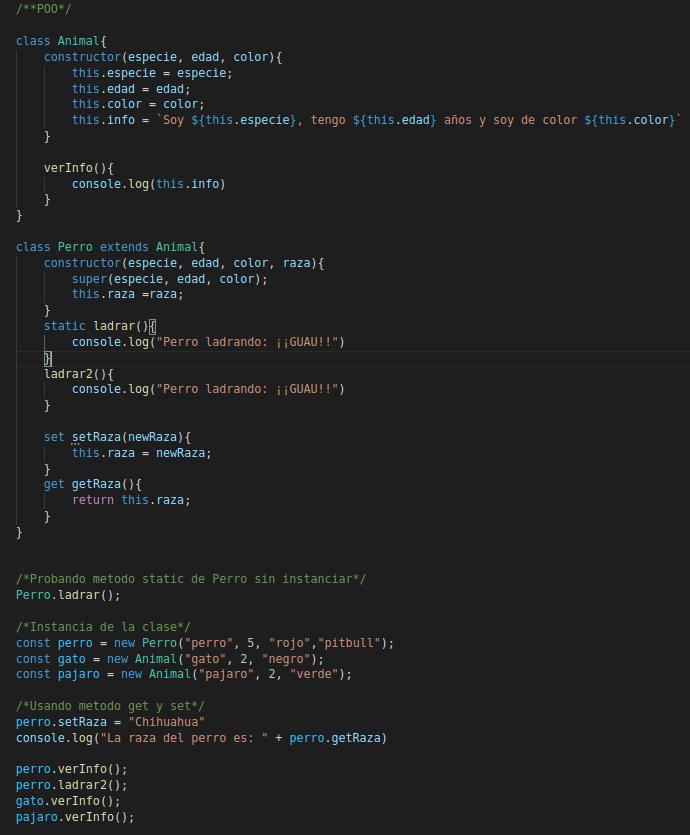

Definición: La programación orientada a objetos es un paradigma que intenta actualizar la forma en la que programamos, mejorandola
permitiendonos programar objetos.
Conceptos basicos POO:
Caracteristicas de la POO:
Abstracción:
Es la iterpretación del objeto que tiene cada persona de manera subjetivo sobre las carecteristicas y lo que representa dicho objeto, es decir, al hablar de un automovil todos se hacen una representación sobre dicho objetos, sus caracteristicas, funciones y demas. Cuando hablamos de Abstracción, intentamos reducir lo que mas podamos el objeto, hacer lo menos complejo que podamos. Continuando con el ejemplo, si sabemos que un automovil puede andar lento, medio y rapido, nosotros no creamos un metodo para tipo de movimiento solo una, llamada andar o moverse, con esto reducimos la abstracción del objeto.Modularidad:
Es la capacidad de resolver un problema grande separandolo por partes.Encapsulamiento:
Esto basicamente hace referencia al hacer privados los datos de la clase para que los usuarios no puedan acceder facilmentePolimorfismo:
Es ver como un objeto se comporta de manera distinta ante el mismo metodo.Otros Conceptos:
Herencia:
Es basicamente crear una clase hija que herada todos los atriutos y metodos de la clase padre.Metodos estaticos:
Es un objeto que no necesita que la clase se defina para poder ser creado. Esto sinifica que el metodo no hace uso de los atributos que son creados en el constructor. Ademas de esto, los metodos staticos no pueden ser invocados por un objeto creado de la clase, si no que deben ser llamados directamente de la clase.Metodos Getter y Setters:
Los metodos Get: son metodos que nos permite acceder de manera segura a los atributos de la clase y los metodos Set: son metodos que nos permiten modificar de manera segura los atributos de la clase.Ejemplo de implementación de POO
